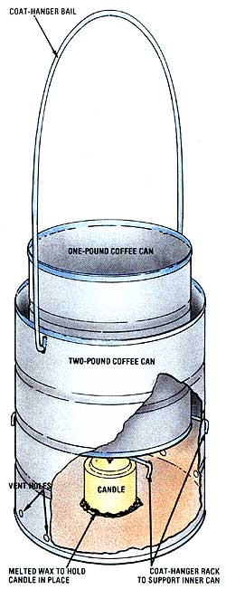

For hot wax on a cold day . . .
A generous application of grafting wax is essential for a successful scion implant . . . it's the post-surgery bandage that protects the wound. And though there are lots of commercial grafting waxes on the market, I've had the best luck with plain old paraffin. It's inexpensive, easy to use, and sticks like glue, no matter the weather. But there is one little hitch to grafting with paraffin: You've got to brush it on while it's melted. Sure, you can melt the stuff on your kitchen stove, but keeping it in a liquid state-outside, on a cold February or March day-takes a little doing. It can be done, however, and at a cost of absolutely nothing! Read on, and I'll tell you how to build your own grafting-wax heater, using only a few toss-away household items and a pair of pliers.
You'll need two tin cans of different sizes (I've had good luck with one- and two-pound-sized coffee cans), a straightened coat hanger, and a stubby candle. Cut the lids out of the cans and-if they're a little grungy-rinse them out. Now, gather everything up and move it to a flat working surface. Since the smaller tin will need to rest inside the larger container with enough clearance at the bottom to allow room for the candle, your first chore is to decide how far up from the bottom of the larger can the smaller tin will need to ride. (Hint: It's nice if the top of the inner container protrudes enough to make it easy to grasp with gloved hands.) When you've got it all figured out, mark a ring around the perimeter of the larger can at the correct height.
Now, drill or punch four holes in the outer can at the level of the mark . . . the first two a couple of inches or so apart, and the other pair in the same relative position on the opposite side of the can. Run a section of your coat-hanger wire in one hole and out its opposite mate, then snip off the excess with the pliers and bend the two ends down to lock the wire in place. Repeat this procedure with a second piece of wire so that you have a support "rack" for the smaller tin inside the larger one.
Next, drill or punch two holes opposite each other just below the rim of the outer container. These will serve to anchor a loop of wire for a handle. Bend the ends as you did before, to hold the makeshift grip in place. Then punch a few holes into the lower half of the outer can for ventilation.
To melt the paraffin, drag out an old pan, run an inch or so of water into its bottom, and then place it on the kitchen stove over medium heat. Lower the smaller tin into the hot water and begin slicing thin slivers from your paraffin block, feeding them into the can until you have the quantity of hot wax you'll need for the job. But beware: Melted paraffin will smoke if allowed to get too hot, so monitor the heat closely.
Ready your new heater for its outside chores by dropping a little melted wax into the bottom of the larger can, then smunching the candle down onto the molten liquid and holding it there for a few seconds until it's hardened in place. Next, carefully lower in the can of premelted wax (you might want to wear gloves for this), and you'll be all set to bundle up and head for the trees. (On really cold days, I use a small can of Sterno "canned heat" instead of a candle . . . it puts out a heck of a lot more Btu!)
Apply your wax bandage with a small paintbrush, making sure to cover all the wounded surfaces of the graft. Try to keep the hot goo off the buds, but don't worry if you slop a little around where it shouldn't be . . . the growing buds will poke right through when they're ready. If you see that you're going to need more wax than you first thought, just shave in a few more slivers as you go along.
Happy tree-doctoring!
|
 |
|
|